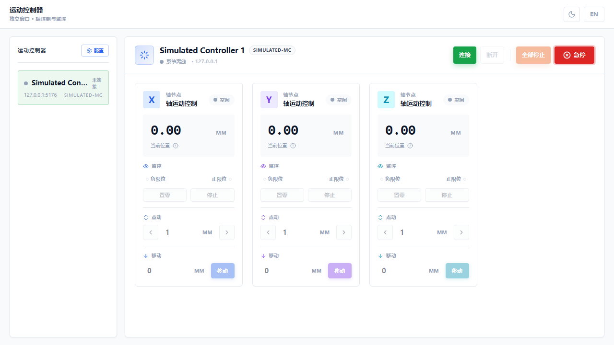
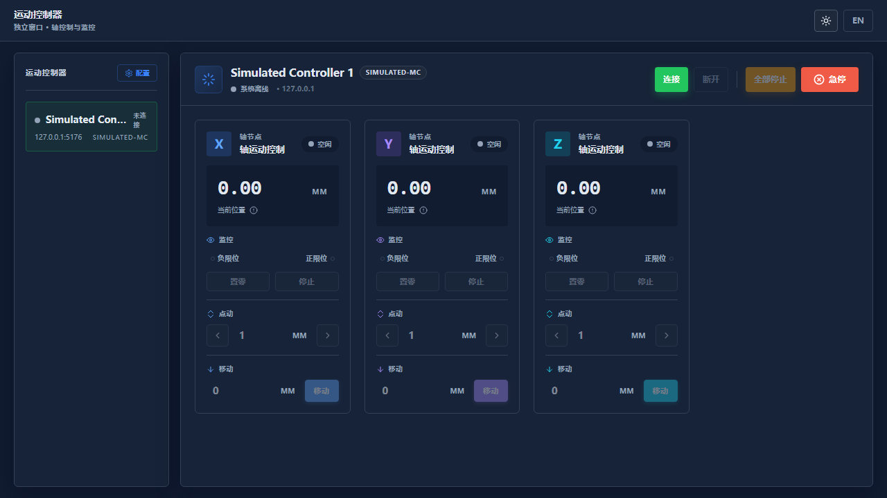
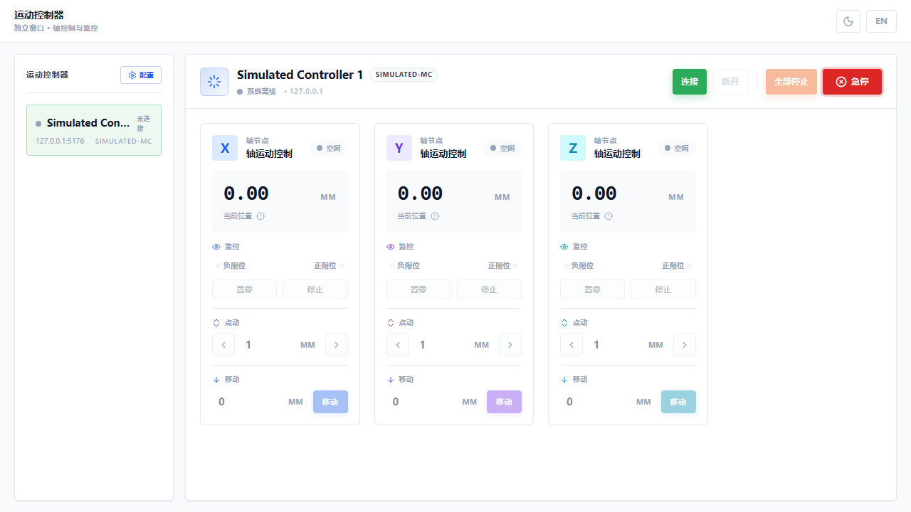
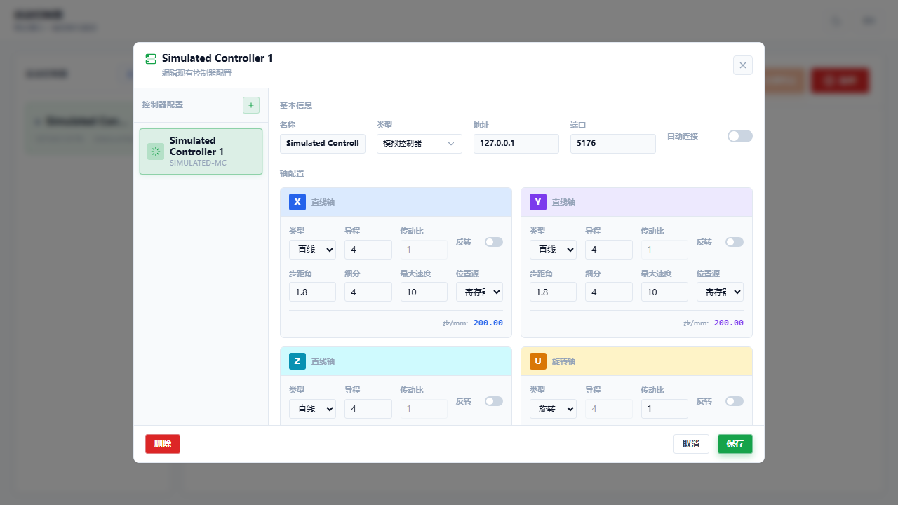
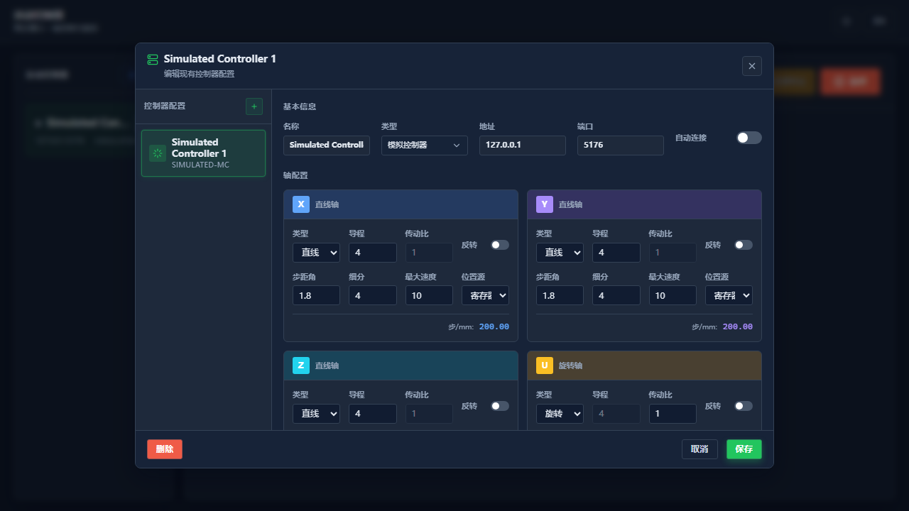

产品简介
运动控制器是一款用于配置、测试和操作运动控制设备的桌面应用程序。
运动控制器（Motion Controller）是一款独立的 Wails 桌面应用，专为运动控制设备的配置、监控与操作而设计。它支持多控制器管理、多轴实时运动控制、编码器补偿配置等功能，适用于工业自动化、精密测量、实验设备控制等场景。
独立桌面应用
基于 Wails 框架构建的跨平台桌面应用，提供原生级性能与体验。
多控制器支持
同时管理多个运动控制器，支持模拟控制器、B140、WTNMC4A 等型号。
实时运动控制
支持点动、定位、归零、急停等多种运动控制模式，响应迅速。
安全保护机制
内置限位检测、急停保护、软限位预警等多重安全机制。
功能特性
运动控制器提供的核心功能一览。
| 功能模块 | 功能说明 | 适用场景 |
|---|---|---|
| 控制器管理 | 添加、编辑、删除控制器配置，支持自动连接 | 多设备环境 |
| 轴监控 | 实时显示各轴位置、状态、限位信息 | 运行监控 |
| 点动控制 | 按设定步长正向/反向微调轴位置 | 精密对位 |
| 定位控制 | 移动轴到指定的绝对目标位置 | 自动定位 |
| 归零操作 | 将当前位置设为零点，便于相对定位 | 坐标系建立 |
| 急停保护 | 一键紧急停止所有轴运动，支持解除 | 安全保护 |
| 编码器补偿 | 配置编码器补偿参数，提高定位精度 | 高精度应用 |
| 主题切换 | 支持深色/浅色主题，适应不同环境 | 视觉偏好 |
界面概览
了解运动控制器的主界面布局与各个区域的功能。
1主界面布局
运动控制器主界面采用三栏式布局：顶部标题栏、左侧控制器列表、右侧主操作区。整体界面简洁直观，信息层级清晰。

界面区域说明
| 区域 | 位置 | 功能说明 |
|---|---|---|
| 标题栏 | 顶部 | 显示应用名称、主题切换按钮、语言切换按钮 |
| 控制器列表 | 左侧边栏 | 列出所有已配置的控制器，显示连接状态 |
| 主操作区 | 右侧 | 显示选中控制器的轴状态与运动控制面板 |
| 状态栏 | 面板头部 | 显示控制器名称、类型、连接状态与网络地址 |
| 操作按钮组 | 面板头部右侧 | 连接、断开、全部停止、急停等操作按钮 |
| 轴卡片网格 | 主内容区 | 每个轴独立显示位置读数与操作控件 |
2深色主题
点击标题栏右上角的月亮/太阳图标，可在深色与浅色主题之间切换。深色主题适合低光环境使用，减轻眼部疲劳。

快速入门
从安装到首次运行，快速上手运动控制器。
1首次使用步骤
-
启动应用
运行运动控制器桌面程序，应用启动后会自动加载已保存的控制器配置。
-
检查控制器列表
在左侧边栏查看已配置的控制器。首次使用时会自带一个模拟控制器（Simulated Controller）。
-
连接控制器
选中目标控制器，点击面板头部的「连接」按钮建立通信连接。
-
进行运动控制
连接成功后，各轴的操作按钮将变为可用状态，即可进行点动、定位等操作。
如果左侧控制器列表为空，点击「配置」按钮添加新的控制器配置。模拟控制器无需硬件即可测试软件功能。
连接控制器
建立与运动控制器的通信连接，开始实时监控与操作。
1连接步骤
-
选择控制器
在左侧边栏点击要连接的控制器名称，使其高亮显示为选中状态。
-
点击连接
点击面板头部右侧的绿色「连接」按钮，等待连接建立。
-
确认连接状态
连接成功后，状态指示点变为绿色，左侧列表中该控制器的状态也显示为「已连接」。

2断开连接
点击「断开」按钮可主动断开与控制器的通信。断开前请确保各轴已停止运动，避免异常中断。
3自动连接
在控制器配置中开启「自动连接」选项后，应用启动时会自动尝试连接该控制器，无需手动操作。
轴运动控制
掌握各轴的监视、点动、定位等核心操作方法。
1轴卡片结构
每个运动轴以独立卡片形式展示，包含以下功能区域：
| 区域 | 说明 |
|---|---|
| 轴标识 | 显示轴名称（X/Y/Z/U）与轴类型（直线轴/旋转轴） |
| 位置读数 | 大号数字显示当前位置，单位 mm 或 °，底部彩色条带显示位置历史 |
| 监视区 | 显示负限位、正限位状态，提供「置零」和「停止」按钮 |
| 点动区 | 设置步长，点击左右箭头按步长正向/反向移动 |
| 定位区 | 输入目标位置，点击「移动」按钮执行绝对定位 |
2点动操作
点动模式用于精密微调轴位置，适合对位、校准等场景。
-
设置步长
在点动区的输入框中输入期望的步长值（单位：mm 或 °）。
-
执行点动
点击左箭头按钮向负方向移动一个步长，点击右箭头向正方向移动一个步长。
-
观察位置变化
位置读数会实时更新，底部彩色历史条带记录最近 50 次位置采样。
3定位操作
定位模式将轴移动到指定的绝对目标位置。
-
输入目标位置
在定位区的输入框中输入目标位置值。系统会自动校验是否超出软限位。
-
检查限位警告
如果目标位置接近或超出限位，输入框会以黄色/红色高亮提示。
-
执行移动
点击「移动」按钮，轴将自动运行到目标位置。
黄色边框表示目标位置接近限位（距离限位 10% 范围内），红色边框表示已超出限位，此时无法执行移动操作。
4置零操作
点击「置零」按钮可将当前轴的物理位置设为零点坐标。置零后，所有相对定位操作将以该零点为基准计算。
5停止操作
点击单轴的「停止」按钮可立即停止该轴的运动。点击面板头部的「全部停止」按钮可同时停止所有轴。
基本信息配置
配置控制器的通信参数与基本属性。
1打开配置面板
点击左侧边栏顶部的「配置」按钮，或点击面板头部的配置图标，即可打开控制器配置面板。

2基本信息字段
| 字段 | 说明 | 示例值 |
|---|---|---|
| 名称 | 控制器的显示名称，用于区分多个控制器 | Simulated Controller 1 |
| 类型 | 控制器的硬件型号 | 模拟控制器 / B140 / WTNMC4A |
| 地址 | 控制器的 IP 地址或主机名 | 127.0.0.1 |
| 端口 | 控制器的通信端口号 | 5176 |
| 自动连接 | 程序启动时是否自动连接此控制器 | 开启 / 关闭 |
3新建控制器
- 点击添加
在配置面板左侧点击「+」按钮或「新建」选项。
- 填写信息
输入控制器名称、选择类型、填写地址和端口。
- 保存配置
点击右下角「保存」按钮，新控制器将出现在列表中。
4删除控制器
在编辑现有控制器时，点击左下角红色的「删除」按钮，确认后即可删除该控制器配置。此操作不可撤销。
当配置有未保存的更改时，底部会显示红色「未保存」提示。关闭面板或切换控制器前会弹出确认对话框，防止误操作丢失更改。
轴参数配置
为每个运动轴配置机械参数与运动限制。

1轴配置参数说明
| 参数 | 说明 | 适用轴类型 |
|---|---|---|
| 类型 | 直线轴（LINEAR）或旋转轴（ROTARY） | 全部 |
| 导程 | 丝杆每转一圈的直线位移（mm） | 直线轴 |
| 传动比 | 电机转速与轴转速的比值 | 旋转轴 |
| 反转 | 是否反转运动方向 | 全部 |
| 步距角 | 电机每步的角度（°） | 全部 |
| 细分 | 驱动器的细分数 | 全部 |
| 最大速度 | 轴的最大运动速度 | 全部 |
| 位置源 | 位置反馈来源：寄存器或编码器（编码器仅 B140 支持） | 全部（编码器仅 B140） |
2脉冲当量计算
配置面板底部会自动显示「步/mm」或「步/°」的计算结果，该值由步距角、细分数、导程/传动比等参数自动计算得出，用于校验配置合理性。
修改轴配置后需点击「保存」按钮生效。错误的机械参数会导致位置计算偏差，请在配置前确认设备的实际机械参数。
编码器补偿
配置编码器补偿参数，提升定位精度。
1编码器补偿功能
编码器补偿用于修正编码器反馈与目标位置之间的系统性误差。当位置源选择「编码器」时，可启用补偿功能。
编码器位置源与编码器补偿功能仅适用于 B140 控制器。模拟控制器（SIMULATED-MC）和 WTNMC4A 控制器不支持编码器方式，轴配置中的「位置源」选项仅可选择「寄存器」。
2补偿参数说明
| 参数 | 说明 | 默认值 |
|---|---|---|
| 启用补偿 | 是否对该轴启用编码器补偿 | 关闭 |
| 预设方案 | 选择默认/高精度/高速/自定义方案 | 默认 |
| 容差 | 补偿停止的误差阈值 | 0.01 |
| 最大循环 | 补偿算法的最大迭代次数 | 10 |
| 稳定时间 | 每次补偿步进后的等待稳定时间（ms） | 100 |
| 最小步长 | 补偿调整的最小步进量 | 0.001 |
| 超时 | 补偿过程的最大允许时间（ms） | 5000 |
3预设方案选择
- 默认
平衡精度与速度，适用于一般应用场景。
- 高精度
更小的容差和步长，更多的迭代次数，适用于精密定位。
- 高速
较大的容差和步长，较少的迭代次数，适用于对速度要求高的场景。
- 自定义
手动调整所有参数，满足特殊应用需求。
常用操作
日常使用中常见的操作场景与步骤。
1切换控制器
在左侧边栏直接点击要操作的控制器名称即可切换。切换前请确保当前控制器的运动已停止。
2查看轴状态
每个轴卡片顶部显示运动状态：绿色闪烁点表示「运动中」，灰色点表示「空闲」。位置读数实时刷新，精度为 0.01 mm/°。
3限位状态监控
监视区显示负限位和正限位的状态。当轴触发限位开关时，对应的指示灯变为红色。触发限位后，该方向的移动将被禁止。
4语言切换
点击标题栏右上角的「中文/EN」按钮，可在中文与英文界面之间切换。切换后所有界面文本将实时更新。
安全与急停
了解安全保护机制与急停操作方法。
1急停按钮
面板头部右侧的红色「急停」按钮用于紧急情况下立即停止所有轴的运动。急停按钮带有脉冲动画效果，醒目易识别。
点击急停按钮后，所有轴将立即停止。急停状态下无法执行任何运动操作，必须先解除急停才能恢复。
2解除急停
急停激活后，界面会显示黄色警告横幅，提示「急停已激活」。点击横幅上的「解除急停」按钮，或再次点击急停按钮，即可解除急停状态。
3键盘快捷键
按下键盘上的 Esc 键可快速触发急停，无需鼠标操作。这在紧急情况下可以更快响应。
4软限位保护
系统会在目标位置超出配置的软限位时自动阻止移动，并在输入框显示红色警告。接近限位时（距离限位 10% 范围内）会显示黄色警告。
5错误处理
当控制器发生报警时，界面顶部会显示红色错误横幅，包含错误信息。点击右侧的关闭按钮可清除错误提示。请根据错误信息排查问题后重新操作。
快捷键
键盘快捷键列表，提高操作效率。
| 快捷键 | 功能 | 使用场景 |
|---|---|---|
| Esc | 紧急停止 | 紧急情况下快速停止所有轴 |
急停快捷键在任何界面状态下均有效，无需聚焦特定区域。建议操作人员在设备运行时将手放在 Esc 键附近，以备紧急情况。
主题切换
自定义界面外观，适应不同使用环境。
1切换方法
点击标题栏右上角的月亮/太阳图标即可在深色与浅色主题之间切换。主题设置会自动保存，下次启动时恢复。
2主题特点
深色主题
低亮度背景，高对比度文字，适合夜间或暗光环境，减轻眼部疲劳。
浅色主题
明亮清爽的背景，适合白天或光线充足的环境，界面元素清晰易辨。
故障排查
常见问题与解决方法。
1连接问题
| 现象 | 可能原因 | 解决方法 |
|---|---|---|
| 连接失败 | IP 地址或端口错误 | 检查控制器配置中的地址和端口是否正确 |
| 连接失败 | 控制器未通电或网络不通 | 检查控制器电源和网络连接状态 |
| 连接后断开 | 网络不稳定 | 检查网线或 WiFi 信号，尽量使用有线连接 |
2运动问题
| 现象 | 可能原因 | 解决方法 |
|---|---|---|
| 轴不运动 | 未连接控制器 | 先点击「连接」按钮建立连接 |
| 轴不运动 | 急停已激活 | 解除急停状态后再操作 |
| 轴不运动 | 触发限位 | 检查限位状态，手动脱离限位开关 |
| 位置不更新 | 位置源配置错误 | 检查轴配置中的位置源设置 |
3配置问题
| 现象 | 可能原因 | 解决方法 |
|---|---|---|
| 保存失败 | 名称重复 | 更换控制器名称，确保唯一 |
| 保存失败 | 端口超出范围 | 端口号必须在 1-65535 之间 |
| 脉冲当量异常 | 机械参数配置错误 | 核对导程、步距角、细分数等参数 |